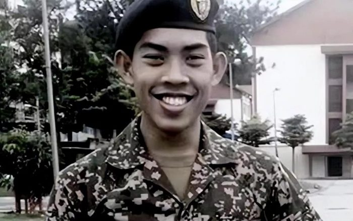
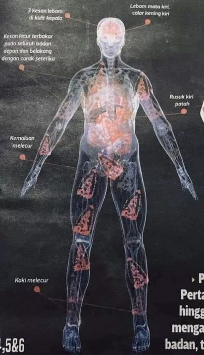
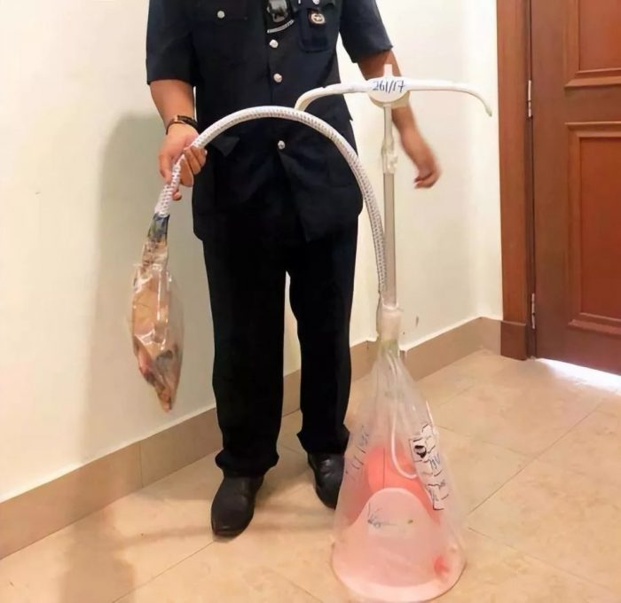

身着军校制服的祖法汉（中）与父母的合影。据说，他的理想是担任海军舰艇舰长。
7年前轰动马来西亚的用蒸气熨斗霸凌同学致死一案，6名大学生上月全部被判绞刑。
据凤凰WEEKLY报道，当地时间7月23日，得知杀害儿子的凶手们被改判绞刑后，马来西亚国防大学学生祖法汉（Zulfarhan Osman Zulkarnain）的父母双双流下热泪，跪谢在法院门口，不停磕头。他们念叨着，“感谢上苍，捍卫了我儿的正义。”出庭时，他们特意穿上印有“为祖法汉伸张正义”“对霸凌说不”等英文字样的上衣。
今年7月23日，得知杀害儿子的凶手们被改判绞刑后，祖法汉的父母跪谢在布城上诉庭的门口。
这起震惊全球的悲剧发生在2017年5月，年仅21岁的海军学员祖法汉在校内惨遭同学霸凌致死。吉隆坡高等法庭曾在2021年裁定六名主要嫌犯误杀罪名成立，判处18年监禁。但祖法汉的父母对此表示不服，并向司法机关提起上诉，要求改判死刑。
祖法汉的母亲哈瓦·奥斯曼（Hawa Osman）说，“自从祖法汉死后，我每晚都以泪洗面。我希望那些霸凌者能体会到我已故儿子所承受的痛苦。”由于长年哭泣，这位母亲于2018年患上了严重的白内障，还伴有高血压。她和丈夫也不再让家中其他的儿女去外地求学，尤其不希望他们踏入军校大门。
该案件自起诉以来，受到新冠疫情等诸多因素的影响，一直拖到今年7月23日才由布城上诉庭作出判决。上诉庭推翻了先前误杀罪的判决，改判六人谋杀罪名成立，必须面对绞刑。
马来西亚华人林欣（化名）认为，该案“改判死刑”是天经地义的。“这个霸凌事件的性质非常恶劣，不判死刑不足以纠正社会风气。”林欣向《凤凰周刊》表示，“涉案人员均已成年，应为自己的行为负上最大责任。我相信大多数马来西亚人都会支持死刑的判决。”

祖法汉在马来西亚国防大学就读时的照片。
被所谓的“朋友”活活烫死
“救命啊！好热啊！”2017年5月21日，马来西亚国防大学宿舍内，祖法汉绝望地大喊着。他因被指控盗窃同学的笔记本电脑，在宿舍遭到虐待，不过祖法汉坚决否认盗窃指控。为了迫使他承认盗窃，施暴者不断升级对他的暴力。据说，有二三十名学生参与了这起施暴，施暴行为持续了整整两天。
事后通过尸检，法医萨尔玛·阿尔沙德（Salmah Arshad）发现祖法汉身上有多达90处伤口，其中29处为三级烧伤，全身烧伤面积达到80%，另外还有严重的瘀伤及骨折，这些伤口主要由熨斗、衣架、皮带等造成。就连他的生殖器，也惨遭烫伤。

祖法汉的尸检图显示，他全身多处被熨斗烫伤。
“烧伤带来的心脏肿胀和肾衰竭导致了他的死亡。”阿尔沙德披露，由于伤势过重，祖法汉即使第一时间被送医，恐怕也难逃一死。
祖法汉的生前好友穆罕默德·艾曼·奥法 (Muhammad Aiman Aufa) 在庭上表示，2017年5月22日，他在宿舍里看到了躺在床上的祖法汉，他全身布满水泡和黑斑。由于清醒时上药太痛，祖法汉生前甚至拜托他人等他熟睡之后再帮他上药。
六名被改判死刑的嫌犯中，有五人承认曾用熨斗烫伤祖法汉，另一人则被指控教唆并指示其他五人实施虐待行为。这其中，好几位竟然自称是祖法汉的朋友。
作为主要施暴者，穆罕默德·阿菲夫·纳吉穆丁（Muhammad Afif Najmudin）承认自己两次将发烫的熨斗放在了祖法汉的大腿上。阿菲夫说，当时祖法汉只穿着一条平角短裤，被熨斗烫到时，“他缩回了腿，大声哭喊起来”。阿菲夫声称，平日里他与祖法汉关系很好，因此无意伤害他并致其死亡。

警方展示了残害祖法汉时使用的蒸汽熨斗。
同阿菲夫一样，另一名施暴者穆罕默德·阿扎穆丁（Muhammad Azamuddin）也称自己与祖法汉关系不错。当被问到“既然身为朋友，为何参与对他的施暴”时，阿扎穆丁辩解说，自己本来只是想给祖法汉一个忠告，“我不知道我的行为会对他造成伤害，因为他当时身上没有任何伤痕”。
法庭上，阿扎穆丁还向祖法汉的父母公开道歉。为了摆脱刑罚，他在最后打起感情牌，声称自己陪伴祖法汉度过了人生中最后的日子，甚至还曾帮他上药。阿扎穆丁说，祖法汉向自己表达过对父母的思念，还说因为不想让父母担忧而不敢同他们联系。听完阿扎穆丁的叙述，坐在公众席上的哈瓦·奥斯曼泪流满面。
施暴者家长以巫师身份造谣
无论阿扎穆丁和阿菲夫等人事后如何辩解，都改变不了残害同学的事实。不过，他们的罪孽不只在施暴方面，还在于对祖法汉的救治上。
死亡前一天，祖法汉被施暴者送往一家医疗诊所救治，最终因伤势过重去世。该诊所主治医师阿兹法尔·胡辛（Azfar Hussin）披露，祖法汉生前两次在阿扎穆丁等人的陪同下来到自己的诊所寻求治疗，不知内情的他曾将施暴者误认为是祖法汉的朋友。
首次见到祖法汉时，阿兹法尔就被他的伤势惊到了。他表示，自己的诊所太小，祖法汉应该去更大的医院接受治疗。当时，阿兹法尔还为祖法汉写了一封转诊信，却遭到施暴者的拒绝。这些人谎称，祖法汉是在军营训练期间因遇上爆炸而受的伤。
四天后，即2017年5月31日，阿扎穆丁等人又将祖法汉送来阿兹法尔的诊所。此时祖法汉的伤势更严重了。阿兹法尔说，他当时看起来虚弱、疲惫且脱水，“与四天前相比，祖法汉需要外人的协助才能脱下衣服，而四天前，他可以独自完成。”阿兹法尔再次要求将祖法汉转往大的医院治疗，但无论施暴者还是祖法汉本人都没有听从他的建议。
阿兹法尔的担忧很快成真，祖法汉离开诊所后的次日，便倒在了宿舍里。此时，阿扎穆丁等人终于肯将他送去医院，但为时已晚。祖法汉去世后不久，马来西亚警方便将他的死亡定性为谋杀，并迅速逮捕了36名涉案学生。由于案件情节过于残暴，马来西亚时任国防部长希沙姆丁·侯赛因发话说，“任何肇事者都不会得到饶恕。”
不仅施暴学生凶残，他们的家长也足够狠毒。此案中，一名被告学生的父亲竟然在法庭上声称自己是巫师，因为获得神灵的“指示”，才指控祖法汉盗窃了电脑。这一邪说让祖法汉的父母表示难以接受，他们认为不少参与霸凌的学生正是因为听信该邪说，才加大了对儿子的施暴力度。
祖法汉的父母认为，如果不是那个家长以巫师的身份造谣，祖法汉说不定能活下来。哈瓦·奥斯曼说，这个巫师的所作所为让她感到愤怒，“他声称自己通过使用物品作法，听到了祖法汉的名字，就断言手提电脑是我儿子偷的……如果可以的话，我希望这个巫师也能遭受此罪，让他尝到被熨斗烙下伤口的滋味。”
令人痛心的是，案发七年来，这六名施暴者的家长从未向祖法汉的父母表达过歉意，尽管他们经常在法庭上碰面。
得知祖法汉受虐后，作为朋友的艾曼先后将两份匿名信放在大学高层管理人员的办公区域，试图让对方知道祖法汉的遭遇。信中写道，“如果你还有人性，请埋伏在410号房（祖法汉所在宿舍），那里有人需要紧急治疗。”
不幸的是，这两封匿名信非但没能引起学校高层的重视，还被曝光在校园群组内。施暴者得知后，迅速将祖法汉转移出410号房。艾曼则由于担心与祖法汉一样遭到霸凌，不敢进一步采取行动。事后，他为自己没能挽救朋友的性命而感到懊恼。他在法庭上自责道，“如果我知道他会死，我一定会送他去医院。”
同样作为证人的医生阿兹法尔，虽然两度建议将祖法汉送去更大的医院进行治疗，但其行为也仅局限在医生的本职工作内，没能进一步采取干预措施。
祖法汉父母也为儿子的惨死感到自责。祖法汉的父亲祖尔卡尼安·伊德罗斯告诉当地媒体，祖法汉曾告诉过家人，自己在校园里遭到同学的围殴，但自己没有意识到问题的严重性，也没过多追问。哈瓦·奥斯曼则回忆说，在与儿子通电话时，她觉察到儿子的异样，但没能引起她的警觉。
祖法汉的死，不仅给家人带来无限的痛苦，也严重撕裂着马来西亚社会。
改判死刑的决定虽然大快人心，但依然遭遇了不少反对声浪。布城上诉庭做出判决后，马来西亚人权委员会（SUHAKAM）、马来西亚反死刑与酷刑组织（MADPET）等团体立刻表示反对。马来西亚反死刑与酷刑组织发言人查尔斯·赫克托（Charles Hector）呼吁将死刑刑罚减为长期监禁。他搬出理由说，“自2018年以来，马来西亚政府就承诺，会在正式废除死刑之前暂停执行死刑。”
与上述人权组织不同，，马来西亚预防犯罪基金会（MCPF）则认为，“改判死刑”的行为是恰当且公正的。该组织高级副主席阿尤布·雅各布（Ayub Yaakob）表示，将人折磨致死是对人类准则的公然违反，尤当这种行为是由受过教育的人实施时。雅各布提到，伊斯兰教一向禁止那些不顾他人安危而夺取他人生命的行为。他还提醒说，“马来西亚人权委员会需要明白，虽然政府已经废除对谋杀和毒品贩卖案的强制性死刑，但法官仍有权力和自由裁量权来判处死刑。”
面对争议，主持该案件的上诉庭法官哈达丽雅 (Hadhariah Syed Ismail) 表示，鉴于阿扎穆丁等六名主要嫌犯行为的残忍性，判处死刑是合理的。“我们同意检方的观点，即谋杀的实施方式‘不仅震惊了司法良知，甚至震惊了社会的集体良知’，这起案件是罕见的令人发指的犯罪案件。这种残忍行为必须予以制止。”
不过，此次判决并非终审。上诉庭改判死刑的当天，六名主要嫌犯的代理律师表示，将会继续上诉至马来西亚联邦法院。因此，死刑裁决能否得到落实，还有待观察。如果最终的裁决无法平息争议，势必会给马来西亚的社会稳定带来挑战。